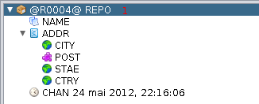
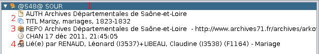
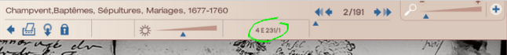

Manage Sources
and repositories
The informations at the base of all genealogy can result from
personal searches (Archives, Courts,...), sharing with other
genealogists, gathering oral information, family documents, etc...
Whatever the origin is, a serious genealogist must show his sources.
A genealogy without sources is not a genealogy.
Two key words
- The Repository (for Gedcom standard, REPO, from
English 'repository', place of storage, deposit): it's the
physical location of an
original document (Town Hall, Government archives,
etc... or simply a folder at your home).
- The Source (SOUR): it's the document that contains all the
information (a Church record, a decennial table, etc..).
Although we are talking of two different entities, it is simply
logical and more efficient to create the repository before creating
the source. For one, the source is contained in the repository first,
and after creating a source, we can link it to its repository.
The process described here to create repositories and sources
entities, are the one you have to follow using the Gedcom editor.
Creating a repository
- right click an empty space on the Entities Table view, the
Dynamic tree view or the Gedcom editor,
- select 'Add Entity Property or Overall Entity', and choose
'Create Repository'
- click on 'Proceed and create repository'.
- The Gedcom
editor will display a tree like this one:

This window shows a certain number of default Tags that can be
modified, and adapted to your information elements. So you have
to manage Tags.
Managing Tags
- Delete a tag:
- right click on the line, choose 'Cut' from the sub-menu
(for example, try deleting STAE, it is not used in some countries
in Europe).
- Add a Tag:
- right click the 1st line (1)
'@Rx@ REPO', and then choose 'List of Gedcom properties', you
will be able to select between pre-established labels (option
at the bottom 'Add default sub-properties' should be checked).
Click 'OK' to confirme.
The 'List of Gedcom Properties' proposes all the Tags
that can be used, complying with the Gedcom grammar, to the
selected Tag.
- right click over certain Tags, and click on 'Add a property',
will let you choose sub-tags available for tags already used
at this level.
You have now created a new repository, it can be reused throughout
your entire genealogy. Now, it will appear in the drop-down
menu which will open when you create new 'Repositories'.
The repositories are listed in the
Gedcom Explorer
and in the Entities
Table View, where you can open them for modifications (orthography,
for example).
Creating a source
- right click an empty space on the Entities table, Dynamic tree
or the Gedcom editor,
- select 'Add Entity Property or Overall Entity', and choose
'Create Source',
- click on 'Proceed and create Source'.
- the editor displays a tree to be completed with your
information.

Little text explanation (2):
- AUTH (Author): like 'Depositary or Document Creator'.
- TITL (Title): used here as 'Title of the document'.
You can change the Tags like you did for REPO.
You must now locate the source, create a link to a repository you
already created.
- right click on the 1st line '@Sxxxxx@ SOUR' (1),
go to the line "Add Entity Property or Overall Entity",
- select in the sub menu the line 'Repository'.
- choose the place (the repository), or create a new one and
confirm clicking on 'Proceed or create a repository'
A new line is created in the Gedcom Editor
(3).
You have now created a new source, it can be reused throughout your
entire genealogy. Now, it will appear in the drop-down menu
which will open when you create new 'Source'. The different uses
of a source are summarized at the bottom of the entity
(4).
The Sources are listed on the Gedcom
Explorer and at the Entities
Table view, where you can open them for modifications (orthography,
for example).
A good source management needs some more details.
First,
you have to register its side(*) (CALN):
- at the window 'SOUR': right click REPO, select 'Add a property'.
- clik 'Call Number CALN', this will create an input area.
Then,
the media type used for the source:
- right click 'CALN' and then, 'List of Gedcom Properties'
and choose 'MEDI'.
- click 'OK' and create an input area, associated to a default
drop down list (if needed, you can create new types of media).
(*)number used to identify a piece
in a collection. The standards aren't always respected. The side
may be this type of format:

And
to finish registering your informations, create a tag 'data'
(DATA in Gedcom). You know how, always the same principle:
- right click the 1st line, 'List of Gedcom Properties',
select 'Data'. If the option at the bottom, 'Add default
sub-properties' is checked, you will have at the top, the tag
EVEN.
- a drop down list is associated to EVEN, no need to write.
Just choose and confirm with 'OK'.
You can use this area as you wish (for example, for a register
containing several types of acts).
- from the line EVEN, right click 'Add a Gedcom Property' and
choose 'DATE' and 'PLAC'. Always 'OK' to confirm.
- It only remains to complete the input areas.
You can add as many sub-tags as you need.

|
To select more than one tag at a time:
Ctrl (pressed)
+ left click on each line.
|
|
Your editor should now look like this:
@S1@ SOUR
AUTH
TITL
DATA
EVEN BIRT
DATE
PLAC
REPO
CALN
MEDI
CHAN 2 Fév 2009, 13:06:24
The tags can be in a different order.
Everything is now ready to move forward to the next stage
Import
or create
a genealogy.